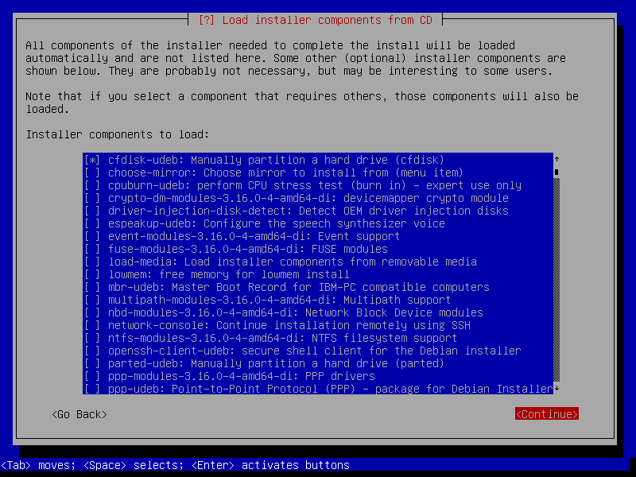
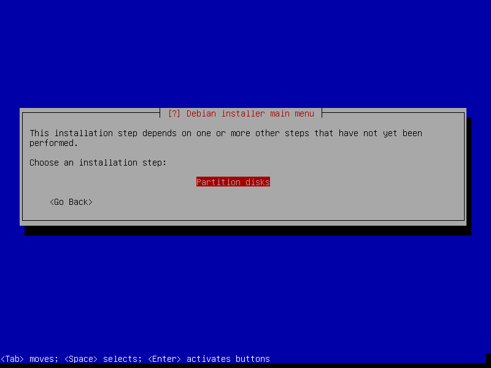

How to setup a NAS using Btrfs
This post will show you how to setup of the NAS built in the previous post. The NAS would have two purposes. The first one would be to provide a reliable and easily accessible storage to share media files and do backups. The second one would be to serve as a media center, using Kodi for instance. We will use Btrfs as this is a modern filesystem with a lot of interesting features.
Before you start
This article is intended to target people with some basic knowledge of Linux installation. If you are a beginner and this is your first time installing Linux, you should probably not follow this guide. There are a lot of simpler ways to build a NAS, at the cost of flexibility.
The best way to understand how Linux installation works is to perform manual installation. There are many distributions providing great guide for installing from scratch. For instance, you could try ArchLinux or Gentoo installation guide.
In this article, we will use Debian and perform a guided installation with some manual steps. You can also install Debian manually using Debootstrap by following this page from the official Debian installation guide.
Starting the installation
You can download the latest stable Debian netinstall ISO. Once it boots, go to Advanced Options and select Expert install. Then, follow the instructions until you reach the Load installer components from CD part. You might want to select cfdisk or gparted to manually create your disk layout if you are used to them. In this post, we will directly use fdisk.

Continue until you reach the Partition disks part. At this point, you will need to stop the installation process and go to the second terminal by entering CTRL+ALT+F2. You will then need to perform some manual setup.
Drives setup
The purpose of the server is to provide accessible and reliable storage for the whole network, so this is the most important part of the setup. My NAS has two 1TB disks and one 2TB disk, and I will create a 2TB redundant storage. Even if it is recommended to have disks of the same size, it is possible to use all the disks in an efficient way and have redundancy.
Partitioning
First, you need to choose a disk holding the swap partition. This is not required if you have a massive amount of RAM, but can be useful if you plan on hibernating your server. You could try to balance the swap over the drives, by putting a 2GB partition on the 2TB disk and a 1GB partition on each 1TB disk for instance, unless you don’t mind wasting a few GB.
We will assume that /dev/sda is the 2TB disk. To check that, you can run dmesg | grep '2.00 TB'. If you have any disk containing important data, I would recommend unpluging them or doing some backup before going any further. In my case, I only had empty disks and the installation media.
# fdisk /dev/sda
Welcome to fdisk (util-linux 2.25.2).
Changes will remain in memory only, until you decide to write them.
Be careful before using the write command.Create the swap partition. I will use 1GB for this tutorial. The snapshots below are taken from a VM on which I ran the procedure, that’s why the size don’t match the disks I have on the NAS.
Command (m for help): n
Partition type
p primary (0 primary, 0 extended, 4 free)
e extended (container for logical partitions)
Select (default p):
Using default response p.
Partition number (1-4, default 1):
First sector (2048-16777215, default 2048):
Last sector, +sectors or +size{K,M,G,T,P} (2048-16777215, default 16777215): +1G
Created a new partition 1 of type 'Linux' and of size 1 GiB.I left every options as default except for the last sector option.
Then, create a single partition for the whole filesystem. We will separate the root, var and home partitions later using Btrfs subvolumes. You can optionally create a separated boot partition depending on the bootloader you want to use. If you plan on using grub2 and don’t encrypt your hard drive you don’t need it.
Command (m for help): n
Partition type
p primary (1 primary, 0 extended, 3 free)
e extended (container for logical partitions)
Select (default p):
Using default response p.
Partition number (2-4, default 2):
First sector (2099200-16777215, default 2099200):
Last sector, +sectors or +size{K,M,G,T,P} (2099200-16777215, default 16777215):
Created a new partition 2 of type 'Linux' and of size 7 GiB.
Command (m for help): w
The partition table has been altered.
Calling ioctl() to re-read partition table.
Syncing disks.Here, I create the main Btrfs partition and write the result. I will not create any partition on the other disks as Btrfs can use a partitionless disk.
Swap
You can then create the swap with the following command:
# mkswap /dev/sda1
Setting up swapspace version 1, size = 1073737728 bytes
UUID=fc6d3f5d-8e2a-4ce3-8d3d-ba13c08a617eBtrfs setup
You are now ready to perform the Btrfs setup. Please note the name of the different partitions you want to use to create the Btrfs volume. In my case, this would be /dev/sda2, /dev/sdb and /dev/sdc. It might be something else depending on your setup. You can then run the following commands.
# modprobe btrfs
# mkfs.btrfs -L nas -m raid1 -d raid1 /dev/sda2 /dev/sdb /dev/sdc
Btrfs v3.17
See http://btrfs.wiki.kernel.org for more information.
Turning ON incompat feature 'extref': increased hardlink limit per file to 65536
adding device /dev/sdb id 2
adding device /dev/sdc id 3
fs created label nas on /dev/sda2
nodesize 16384 leafsize 16384 sectorsize 4096 size 15.00GiBThe -L nas creates a label on the filesystem so that you can mount it using the label instead of the UUID. The -m raid1 and -d raid1 activate RAID 1 for the metadata and the data. Btrfs will automatically handle the poll of heterogeneous disks.
Then, you need to mount the newly created Btrfs volume.
# mount /dev/sda2 /mntCheck that every data are mirrored by running:
# btrfs filesystem df /mnt/
Data, RAID1: total=1.00GiB, used=512.00KiB
Data, single: total=8.00MiB, used=0.00B
System, RAID1: total=8.00MiB, used=16.00KiB
System, single: total=4.00MiB, used=0.00B
Metadata, RAID1: total=1.00GiB, used=112.00KiB
Metadata, single: total=8.00MiB, used=0.00B
GlobalReserve, single: total=16.00MiB, used=0.00BYou need all the blocks to use the RAID 1 allocation level. This ensures that the data are written to at least 2 different disks in order to tolerate the loss of 1 disk. If you see single like on my output, just run the following command.
# btrfs balance /mnt/
Done, had to relocate 6 out of 6 chunksNow, let’s create the subvolumes. For the root partition, I use a different root than the Btrfs tree root. This has several advantages, like being able to easily install a new OS on the same volume or snapshots my volumes. I will dedicate another article to my backup setup.
# btrfs subvolume create /mnt/debian/
Create subvolume '/mnt/debian'
# btrfs subvolume create /mnt/debian/root/
Create subvolume '/mnt/debian/root'
# btrfs subvolume create /mnt/debian/var
Create subvolume '/mnt/debian/var'
# btrfs subvolume create /mnt/debian/home
Create subvolume '/mnt/debian/home'Finally, mount the different subvolumes such that Debian can install the base system. You may want to have a look at the Btrfs mount options in case for instance you use SSD or you want to enable compression.
# mkdir /target
# mount -o subvol=debian/root /dev/sda2 /target
# mkdir /target/var
# mount -o subvol=debian/var /dev/sda2 /target/var
# mkdir /target/home
# mount -o subvol=debian/home /dev/sda2 /target/homeYou also need to manually create the fstab file in /target/etc/fstab/. Here is a sample file:
LABEL=nas / btrfs rw,relatime,subvol=debian/root 0 0
LABEL=nas /var btrfs rw,relatime,subvol=debian/var 0 0
LABEL=nas /home btrfs rw,relatime,subvol=debian/home 0 0
/dev/sda1 swap swap defaults 0 0As discussed before, we use the label we just created instead of the UUID.
Resuming the installation
Now, go back to the installation media by typing CTRL+ALT+F1, skip the partitioning step and run directly the install the base system step. Don’t worry if you get the following message, you can ignore it by selecting <Go Back>. You might need to do that more than once.

The installation step may take a while depending on the disks you are using or your network speed. While this is installing, you can go to /mnt/debian/root and /mnt/debian/var and observe the different files being copied. These are the same files than in /target and in /target/var.
If you go to /mnt/debian, you can rename any subvolume and everything will still work. This is as if they where regular folders, but they can be mounted as any other partition. This has some nice applications. For instance, you can replace the root partition with a snapshot while it is running and reboot the system. This will basically rollback the system at the state it was when you performed the snapshot.
The bootloader
Finally, you will need to install the grub bootloader, as any other boot loader might not be able to boot a Btrfs filesystem. Syslinux may work but doesn’t support compression or encryption according to the Syslinux wiki. If you still want to use an incompatible setup, you will have to create a dedicated boot partition formatted to FAT32 or EXT 2/3/4 for instance.
Because of the manual partitioning, you will have to manually install some programs. First, you need to chroot into the new system. You can do that with the following command:
# chroot /target /bin/bashThen, you can install the Btrfs tools containing the btrfs command. This will also regenerate the initramfs to integrate the Btrfs tools in order to mount the root partition during boot as it is present in a subvolume. If you forget this step, your system will be unbootable. You will then have to boot a live USB and repair it, or restart the installation from scratch.
This is the main inconvenience of having the root of the system separated from the root of the Btrfs partition. The kernel alone is not able to handle such setup, so you need an initramfs with the btrfs program to mount your partitions.
root@debian# apt-get install btrfs-toolsFinally, you can install and configure grub:
root@debian# apt-get install grub2When you are asked to select the disk where to install grub, be careful not to select a partionless disks. If you created partitions in all your disks, I recommend you to install grub on all of them. Doing so, you will still be able to boot your system even if your main disk fails.
Once you are done, you can directly go to the Finish the installation step. This will reboot your system, and you can now start using it.
Final thoughts
This setup might seem complicated, but it has a lot of advantages as you will see in later articles. Especially, you can easily install another Linux distribution while the current system is running without using an installation drive. You can also import the system on your desktop machine, test some changes and send them back to your server. Then, when you are ready, you can seamlessly switch to the new system. Finally, you can have an unlimited number of online snapshots without worrying about space or performance issues.
Further readings
- This setup is inspired from this article describing a similar setup with ArchLinux.
- This other post will compare several OS I considered or tried for my NAS.